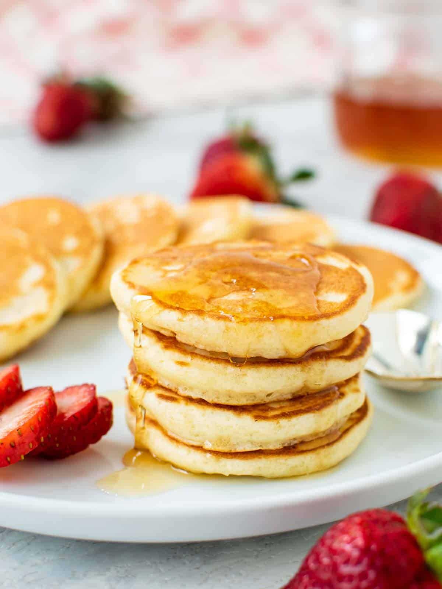

Mini Pancake
Ingrediants
- Egg
- Baking powder
- Milk
- Plain Flour
- Melted Unsalted Butter
- Salt
- Sugar
Instructions
- Whisk together the egg, milk and melted butter in a jug or small bowl.
- In a seperate bowl, whisk flour, sugar, baking powder and salt to combine then add egg/milk mixture. Whisk until just combined.
- The batter should be smooth and hold a soft form when dropped off a spoon. Add a little extra milk if too thick.
- Heat a non stick skillet or griddle pan. Use a little butter to grease the pan. Drop a small amount of batter(approx 2-3 teaspoons) from a spoon
